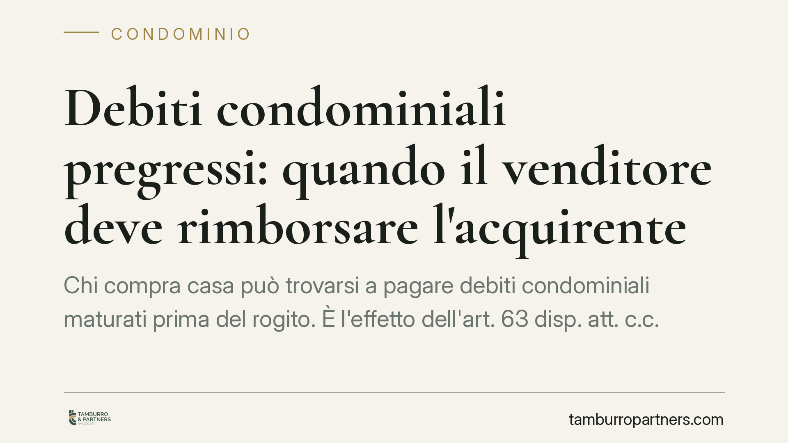

Debiti condominiali pregressi: quando il venditore deve rimborsare l'acquirente
Chi compra casa può trovarsi a pagare debiti condominiali maturati prima del rogito. È l'effetto dell'art. 63 disp. att. c.c. Una recente pronuncia, però, ha condannato i venditori a rimborsare l'acquirente grazie a una clausola di manleva senza limiti temporali inserita nel contratto. Un caso che chiarisce i rapporti interni tra le parti e il valore delle clausole contrattuali.

Il caso
Un acquirente scopre, dopo il rogito, di dover pagare un debito condominiale sorto prima dell'acquisto. Paga al condominio, come la legge gli impone, ma poi agisce contro i venditori per recuperare la somma.
La decisione gli dà ragione: i venditori vengono condannati al rimborso. La leva non è la disciplina condominiale in sé, ma una clausola contrattuale di manleva priva di limiti temporali, con cui i venditori si erano impegnati a tenere indenne l'acquirente da oneri pregressi.
È una distinzione decisiva: un conto sono i rapporti verso il condominio, un altro sono i rapporti interni tra chi vende e chi compra.
Inquadramento normativo
L'art. 63 delle disposizioni di attuazione del codice civile stabilisce che chi subentra nei diritti di un condòmino è obbligato, in solido con il proprio dante causa, al pagamento dei contributi relativi all'anno in corso e a quello precedente.
Tradotto: il condominio può chiedere all'acquirente il pagamento delle spese maturate nell'annualità del trasferimento e in quella immediatamente anteriore, anche se relative a un periodo in cui l'immobile non era ancora suo. È una tutela pensata per il condominio, che così ha due debitori invece di uno.
Questo meccanismo, però, riguarda i rapporti "esterni", cioè verso il condominio. Non dice nulla su chi, nei rapporti "interni" tra venditore e acquirente, debba sopportare in via definitiva il peso del debito.
Su quel piano vale il principio generale: le spese competono a chi era proprietario nel periodo in cui il debito è maturato. E soprattutto vale ciò che le parti hanno pattuito nel contratto. Una clausola di manleva – con cui una parte si impegna a rimborsare l'altra per determinati oneri – è pienamente valida e, se non contiene limiti temporali, copre anche debiti risalenti.
Implicazioni pratiche
Per chi acquista, il messaggio è duplice.
Da un lato, il condominio può bussare alla sua porta per debiti che non ha generato: pagare non è un'ingiustizia, ma l'applicazione della legge. Dall'altro, quel pagamento non è necessariamente definitivo. Se il debito riguarda un periodo anteriore all'acquisto, l'acquirente conserva l'azione di rivalsa verso il venditore.
La clausola di manleva rafforza questa posizione. Quando è formulata in modo ampio e senza limiti di tempo, consente di recuperare somme che altrimenti richiederebbero un accertamento più laborioso sulla ripartizione delle spese.
Per chi vende, il rovescio della medaglia: firmare una manleva generica significa esporsi al rimborso di debiti anche remoti. Occorre valutarne con attenzione la portata prima della sottoscrizione.
Cosa fare in concreto
- Richiedi la liberatoria condominiale prima del rogito. Chiedi all'amministratore un attestato aggiornato sulla situazione dei pagamenti e sulle spese deliberate ma non ancora esigibili.
- Disciplina espressamente i debiti pregressi nel preliminare. Inserisci una clausola che individui chi sopporta le spese maturate prima del trasferimento, con eventuale manleva a carico del venditore.
- Verifica i limiti temporali della manleva. Se sei acquirente, evita clausole che coprano solo l'ultima annualità; se sei venditore, valuta di circoscriverne l'ambito.
- Conserva la documentazione dei pagamenti. Se paghi al condominio un debito non tuo, tieni traccia di quietanze e delibere: sono la base dell'azione di rivalsa.
- Fatti assistere nella redazione delle clausole. La formulazione incide direttamente sull'esito di un'eventuale controversia.
La vicenda conferma che l'art. 63 disp. att. c.c. protegge il condominio, non regola i rapporti tra le parti del contratto. Chi vuole tutelarsi deve intervenire dove la legge lascia spazio all'autonomia: nel testo dell'accordo.
*Contributo informativo a cura di Tamburro & Partners - Avv. Giuseppe Tamburro. Non costituisce parere legale.*
Ogni condominio ha una storia a sé.
Se gestisci un'amministrazione e vuoi un confronto su una specifica questione condominiale, scrivi allo studio. Ti rispondiamo entro un giorno lavorativo.